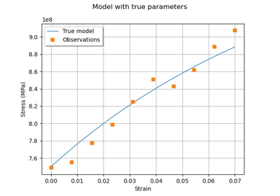

The Chaboche mechanical model¶
Deterministic model¶
The Chaboche mechanical law predicts the stress depending on the strain:
![\sigma = G(\epsilon,R,C,\gamma) = R + \frac{C}{\gamma} (1-\exp(-\gamma\epsilon))]()
where:
 is the strain,
is the strain, is the stress (Pa),
is the stress (Pa), ,
,  ,
,  are the parameters.
are the parameters.
The variables have the following distributions and are supposed to be independent.
Random var.
Distribution
Lognormal (
MPa,
MPa)
Normal (
MPa,
MPa)
Normal (
,
)
Uniform(a=0, b=0.07).
Thanks to¶
Antoine Dumas, Phimeca
References¶
Lemaitre and J. L. Chaboche (2002) “Mechanics of solid materials” Cambridge University Press.
API documentation¶
- class ChabocheModel(strainMin=0.0, strainMax=0.07, trueR=750000000.0, trueC=2750000000.0, trueGamma=10.0)
Data class for the Chaboche mechanical model.
- Parameters:
- strainMinfloat, optional
The minimum value of the strain. The default is 0.0.
- strainMaxfloat, optional
The maximum value of the strain. The default is 0.07
- trueRfloat, optional
The true value of the R parameter. The default is 750.0e6.
- trueCfloat, optional
The true value of the C parameter. The default is 2750.0e6.
- trueGammafloat, optional
The true value of the Gamma parameter. The default is 10.0.
Examples
>>> from openturns.usecases import chaboche_model >>> # Load the Chaboche model >>> cm = chaboche_model.ChabocheModel() >>> print(cm.data[:5]) [ Strain Stress (Pa) ] 0 : [ 0 7.56e+08 ] 1 : [ 0.0077 7.57e+08 ] 2 : [ 0.0155 7.85e+08 ] 3 : [ 0.0233 8.19e+08 ] 4 : [ 0.0311 8.01e+08 ] >>> print("Inputs:", cm.model.getInputDescription()) Inputs: [Strain,R,C,Gamma] >>> print("Outputs:", cm.model.getOutputDescription()) Outputs: [Sigma]
- Attributes:
- dimThe dimension of the problem
dim=4.
- Strain
Uniformdistribution ot.Uniform(strainMin, strainMax)
- R
Diracdistribution ot.Dirac(trueR)
- C
Diracdistribution ot.Dirac(trueC)
- Gamma
Diracdistribution ot.Dirac(trueGamma)
- inputDistribution
ComposedDistribution The joint distribution of the input parameters.
- model
PythonFunction The Chaboche mechanical law. The model has input dimension 4 and output dimension 1. More precisely, we have
 and
and  .
.- data
Sampleof size 10 and dimension 2 A data set which contains noisy observations of the strain (column 0) and the stress (column 1).
Examples based on this use case¶

Generate observations of the Chaboche mechanical model